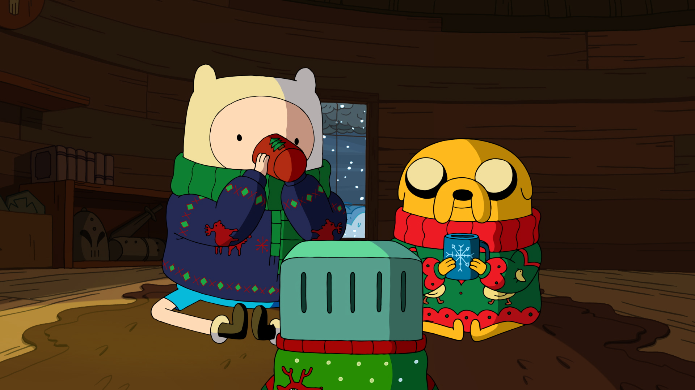

One of my favourite episodes.
It gives you a feeling that nothing in this cartoon is accidental.
And the main weirdo has a touchy history.
Holly jolly
Finn and Jake watching secret tapes with Ice King diary.
They are sure there are some evil secrets hidden.

They will find out about scientist Simon,
who just loved magical objects and his wife.